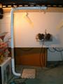
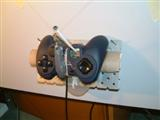
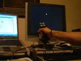
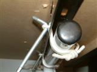
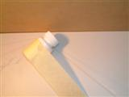
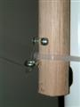
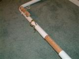
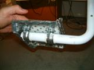

Kickstick - The Device
Some photographs, a video and features of the proof-of-concept / prototype Kickstick.
Note that these are the result of many attempts at solving different problems.
Back to main page
|
|

|
- The left swing, pulley and gamepad sensor.
- Note how similar it looks to the
concept design in the
provisional patent application.
|
|

|
- Crude but effective sensor: Gamepad, chupa-chup stick, fishing tackle
- The fishing weight keeps the lines taught and the diagonal line approach
facilitates the
skid-steer style control.
- Note the mounting. The whole assembly will pivot outward when the line is pulled
too far thus preventing damage.
|
|

|
- A video illustrating software to move a mouse using a joystick or gamepad
- Tilt the joystick a little and the cursor will mirror the movement
- Tilt the joytick further and the cursor will slide across the screen at a speed proportional to the tilt angle
- This helps accuracy when targeting small user interface elements
|
|

|
A rope hinge:
- low profile to prevent encroachment on leg space
- silent
- practically no friction
- maintenance free
- detachable
- pinch danger (the only downside)
...I guess there was a use for those old Ikea hex tools.
|
|

|
Simple pulley:
- Yes, it's a medicine bottle
- It's actually screwed to the desk. The tape is only to keep it still
- Can unloop easily
|
|

|
Meeting of the line and the swing:
- Wind or unwind the line around the screws to calibrate centre point
- Move the assembly up or down the swing to calibrate sensitivity
|
|

|
Telescopic length adjustment:
- Adjust to fit different size legs
- No need to recalibrate
|
|

|
Underside of platform:
- No need for articulation, the user's ankle can accomodate the rigid platform
- A single piece of sheet metal...origami with a hammer!
|
{kind=link}
{kind=link}
{kind=link}
{kind=link}
{kind=link}
{kind=link}
{kind=link}
{kind=link}
{kind=link}